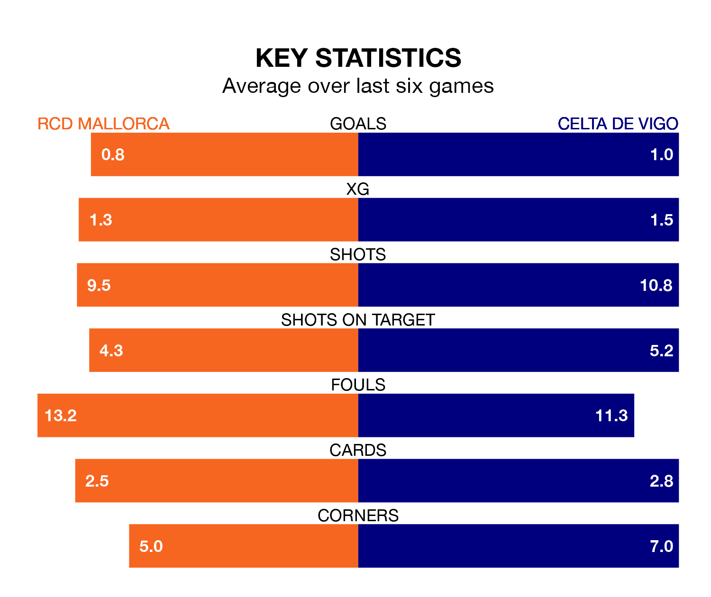

Struggling Celta de Vigo face RCD Mallorca away at Estadi Mallorca Son Moix on Saturday looking to build on a win in their last league outing.
After securing all three points with a 2-1 victory over Real Betis on January 3, Celta de Vigo sit 17th in La Liga.
They travel to play a Mallorca side 14th in the standings, who lost in their last match, 1-0 against Real Madrid.
In the last 10 years, Mallorca and Celta have played each other on seven occasions. Mallorca won four of them, Celta one, and they drew twice.
On average, RCD Mallorca scored 1.9 goals and Celta de Vigo 1.0 in those matches.
Their last meeting was on September 16, when Mallorca won 1-0 away.
With Predrag Rajković between the sticks, Mallorca can rely on one of the league's safest pair of hands. He has kept six clean sheets in his 19 appearances this season in La Liga.
In Celta's net, Vicente Guaita has three clean sheets in 10 games. He has conceded a goal every 73 minutes, 10% more often than the 81 minutes between goals for Rajković.
With 17 goals in 19 games so far this season, RCD Mallorca are scoring at below the league average rate with 0.9 goals per game. But they are conceding fewer than average too, letting in 23 goals at a rate of 1.2 per game.
Celta de Vigo are also below average scorers, with 1.1 goals per game, compared to a league average of 1.3. They have conceded 1.5 goals per game.
The hosts are in mixed form in La Liga, with two wins and three draws from their last six games.
And also with two wins and three draws over that period, the away side's form is identical – they have both taken nine points from 18.
Updated: 11:29, 08/01/24